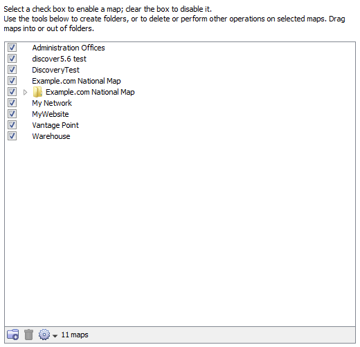

Enabled Maps
Use the Enabled Maps panel of the Server Settings window to enable
and disable maps, to remove maps, to organize them into folders, and to import and export them.

- Checked maps - these maps are active.
InterMapper actively polls everything on the map.
- Unchecked maps - these maps are not
"active". InterMapper does not poll the devices on those maps.
The Enabled Maps panel lists available maps and shows which ones are enabled. From the Enabled Maps panel,
you can do the following:
- Enable or Disable a map.
Click the check box to the left of a map in the list to enable or disable
it.
- Import a map. Click Import...
to import data into InterMapper.
- Export a map. Click Export...
to save the current map as an InterMapper map file on your local machine.
- Duplicate a map. Click to select a map, then click Duplicate to create a copy of it.
- Remove a map. Click to
select a map, then click Remove. A confirmation window appears.
Note: When you remove a map, it is placed in the Maps (Deleted)
folder.
- Create a new Folder. Click a map at the level you want to create the folder, then click New Folder. (see below)
Organizing Maps into Folders
From the Enabled Maps panel, you can create folders, and use them to organize your maps. This organization then appears in the Map List window.
To organize maps into folders:
- If you want to create a folder in the top level of the map list, click any map at the top level, and click New Folder. A folder appears, with the name "Untitled". To create a folder within a folder, click the folder in which you want to create the new folder.
- Enter a name for the new folder and press Enter. The folder's name changes to the specified name, and the folder moves to the correct alphabetic location in the list.
- Drag maps into the folder.
Note: When you create a folder with the same name as a map at the same hierarchical level, a folder appears. Once the folder is created, when you double-click the folder in the Map List window, the map opens.
Map File Locations
Maps are stored in the following locations:
- Enabled maps are stored in the "InterMapper
Settings/Maps" folder.
- Disabled maps are kept in the "InterMapper Settings/Maps
(Disabled)" folder.
- When you delete a map, it is not discarded, but is
placed in the "InterMapper Settings/Maps (Deleted)" folder.
Note: While it is possible to place maps in the
Maps folder using the file system, this is not recommended. If the server is
running when you place the files in the folder, the map(s) are ignored and an
error is logged when you go to the Server Configuration>Enabled Maps panel of the Server Settings window. Use the Enabled Maps panel's Import Map button to add maps to the Maps folder.